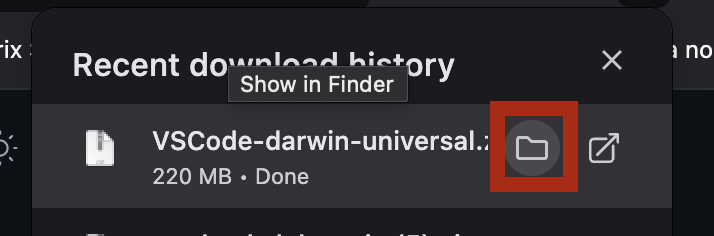

How to Install VSCode | ASW Hack Club
Download from the website:
First, you are going to download the zip file containing the application from the official website.
As you see in the image, you are going to click the download for *platform* button and it will start downloading something. Just click save.

Once you have the file downloaded, you are going to click the "Open in Finder" button in the downloads manager of your browser, like seen in this iamge:
Once you are in your file explorer with the file, drag it onto your desktop. Once it is on your desktop, you are going to right click on it, and go Open with > Archive Utility
This will dump the file out on your desktop. Select your desktop to make sure that it says "Finder" at the top left of your screen. Click on "Go" > "Applications" to open your appilcations folder.
With your applications folder open, you are going to drag in the VSCode app into your applications folder. Just drag it in, nothing else.
After you have dragged it into your applications folder, you should be able to press command + space to open Spotlight, and then type in visual studio and see Visual Studio Code. Open it.

You will now have Visual Studio Code! You should be able to just simply go through the startup, and if it asks you about language extensions, install the Python langauge extension, and you should be good to go.
If you want to do anything else, you could set up for VS code with an installation of Live Server so that you are able to preview your code. A video detailing how to do that can be seen here: link